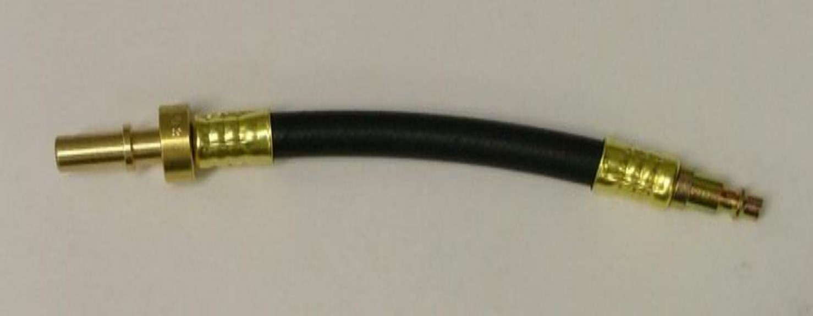

Doc no. MOC-TSB-13-17 // Vol. 13 No. 17 // May 16, 2013 // Fuel
BMW Diesel Fuel Adapter
MOC has developed a new fuel adapter for use on 2009 – Newer BMW Diesel vehicles (Part No. 72203). This adapter is known to work on the 3.5L N47 Engine used in the E70, X5, and E90.
What's new
NOTE: This adapter must be used with the Diesel CAT (Part No. 72250) or the Diesel Fuel Injector Cleaning Machine (Part No. 72220), and can be used with the 12mm Female quick disconnect (Part No. 72202) as a mating adapter.
Performing a service on the BMW Diesel engine can be accomplished with 2 male Quick Disconnect adapters. In addition to this new adapter, you will also need the 5/16" Male adapter (Part No. 72246).
Contact
For more information, contact the Machine & Equipment Department at 866.244.6621.

Part numbers
| Part No. | Description | Notes |
|---|---|---|
| 72203 | Adapter, Fuel, BMW Diesel | |
| 72250 | — | |
| 72220 | Diesel Fuel Injector Cleaning Machine | |
| 72202 | Adapter, Fuel, Female, 12mm Quick Disconnect | |
| 72246 | 5/16" Male adapter |